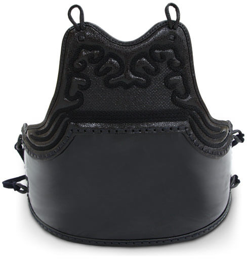

Expectations, Basics and Beginning Terminology
We are always accepting new members and encourage newcomers to watch a practice and ask questions afterwards before they participate. We accept all students ages 8 and up. We limit new students to Saturday classes until they have an understanding of the basics so that they are able to learn at their own pace. Please see our practice schedule for our practice time and location.
On your first day practicing with us you should wear comfortable gym shorts and a t-shirt. We can provide a shinai (bamboo sword) for you to borrow as you start. We do have new shinai available for purchase for $30. That is all that is required to start practicing with us.
Beginners will learn the very basics of kendo that will build the foundation for everything that is taught afterwards. You will focus on:
Months 1-3: Entirely focused on the basics mentioned above.
Months 4-6: Participate in the regular practice where you will learn from other members in full armor. You will use what you learned previously and build on that with more advanced drills.
Months 6 and onward: Put on your armor! Participate in regular practice wearing bogu. Again, you will use what you have learned and slowly build on that by participating in all the drills that the rest of the dojo practices. You will also get to start sparring and when doing so with other advanced members you will be encouraged to attack often and use all the techniques you’ve previously worked on.
It is important to note that everyone learns at a different pace and that is ok. The timeline above is a rough estimate. How often you attend practice will have a significant impact on this timeline and the pace at which you learn.
This is a list of some of the basic terminology that you will hear as you begin kendo practice. As you contiue through your study, you are encouraged to seek additional sources for further terms and information.